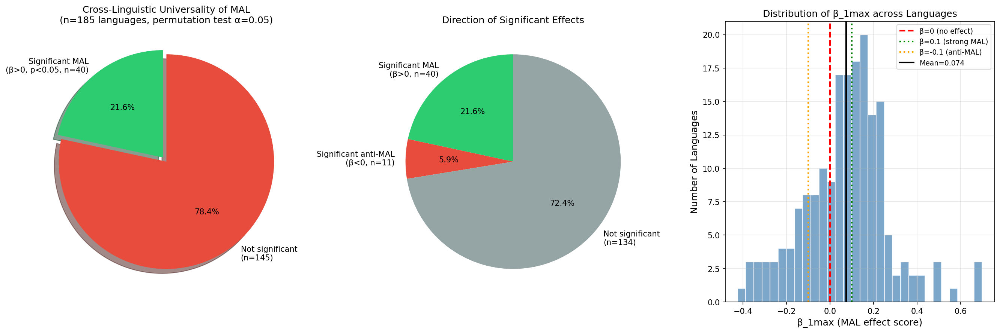

Pegah Faghiri, Kim Gerdes, Sylvain Kahane (2026). Verifying the Menzerath-Altmann law in the verbal domain in 180 languages. UDW26 @ LREC 2026.
This page explains the per-language permutation significance test behind the «Sig.» column on the big effect table and the «21.6% pass the universality test» tile on the home page. It is a standard non-parametric test of the sign and slope of the MAL log-log regression for each language separately, as defined in the cell test_mal_significance_beta() of 08_menzerath_altmann_analysis.ipynb.
On 185 UD v2.17 languages (those with enough verbs to fit a regression), the test gives:

{n → mean_constituent_size} for all n from 1 up to the largest n that meets the minimum-count threshold (default MIN_COUNT = 100 verbs).log(mean_size) = α + β · log(n). The slope β is the headline statistic: negative means MAL holds (more dependents → smaller constituents); positive means anti-MAL.log(mean_size)) with respect to the x-values (log(n)) and refitting the slope. We repeat this 1 000 times (n_permutations = 1000). Under the null hypothesis «n and constituent size are independent», the observed β should be a typical draw from this distribution.alpha = 0.05).significant_mal = True iff β < 0 (slope goes the MAL direction in log-log space, i.e. compression). Note: in our cached numbers the sign convention is flipped: we report beta_1max as the positive slope of the inverse relation, so the test code uses «significant and beta > 0» directly to flag MAL–compliant languages (see test_mal_significance_beta for the exact sign handling).Honest framing first. The permutation does not shuffle individual sentences or individual dependents — it shuffles the per-n column of aggregated mean sizes. But seeing one real verb per bucket makes those means concrete, so let us walk through English end‑to‑end.
Each point on the English MAL curve corresponds to one chunk size n and aggregates all English verbs in UD v2.17 that have exactly n dependents. The y‑value is the average subtree size of those dependents. Two real EWT verbs, one from the n=2 bucket and one from the n=4 bucket:
After averaging over all English verbs (not just our two examples), the cached signal data/lang2MAL_full.pkl['en']['total'] collapses to just 5 rows (those n‑values that pass MIN_COUNT=100):
| n | mean dependent size | log n | log mean | # English verbs in bucket |
|---|---|---|---|---|
| 1 | 3.724 | 0.000 | 1.314 | 186 933 |
| 2 | 3.383 | 0.693 | 1.219 | 60 660 |
| 3 | 3.134 | 1.099 | 1.143 | 8 918 |
| 4 | 3.209 | 1.386 | 1.166 | 1 019 |
| 5 | 3.348 | 1.609 | 1.208 | 126 |
Fitting OLS on the (log n, log mean) columns gives the observed slope βobs ≈ +0.053 (very mild, slightly anti-MAL direction).
We now ask: could a slope this small simply arise from a chance pairing of n’s and means? We literally permute the y‑column while keeping the x‑column fixed. Two example shuffles:
| log n | original log mean | shuffle #1 | shuffle #2 |
|---|---|---|---|
| 0.000 | 1.314 | 1.166 | 1.208 |
| 0.693 | 1.219 | 1.143 | 1.314 |
| 1.099 | 1.143 | 1.208 | 1.143 |
| 1.386 | 1.166 | 1.314 | 1.219 |
| 1.609 | 1.208 | 1.219 | 1.166 |
| refitted β | +0.053 | −0.052 | −0.018 |
Each shuffle is one random re-pairing of the same five y‑values to the same five x‑values. We refit OLS on the shuffled table and record the new slope. Repeat 1 000 times.
For English the 1 000 permuted slopes form a distribution centred on 0, ranging roughly from −0.10 to +0.09. The observed βobs = +0.053 sits squarely in the crowd: about 60.5% of the permutations yield a slope at least as extreme in absolute value. That fraction is the two-tailed p-value, and 0.605 ≫ 0.05, so English is reported as not significant (see its row in the big effect table).
A small ASCII picture of where the observed slope lands in the null distribution:
count of 1000 permuted β
↓
−0.10 ▁▁▂▃▅▇██▇▅▃▂▁▁ +0.09
↑
βobs = +0.053 (≈ 60th percentile of |β|)Partly, yes. Dep trees make it tangible what one verb instance contributes to one bucket’s mean — they rescue the test from feeling abstract. They also make clear why the n=4 bucket of English is so noisy (only 1 019 verbs, often dragged up by occasional long‑clause dependents like the achieve‑clause above).
But, strictly, no. The permutation operates one level up: on the 5‑row aggregated table in panel B, not on the individual sentences in panel A. Shuffling whole sentences would be a different test (and a much more expensive one). What we shuffle here is just the y‑column of those five averages.
Each row shows the actual fitted slope β(1→max) on the cached data and the permutation p-value. Click the language name to jump to its row in the big effect table.
| Language | β(1→max) | p-value | Verdict | Interpretation |
|---|---|---|---|---|
| Georgian | +0.117 | <0.001 | MAL✓ | Slope clearly positive in the MAL direction; the permutation distribution almost never reaches this magnitude by chance, so we reject independence and call it MAL–compliant. |
| OldChurchSlavonic | -0.232 | <0.001 | anti✓ | Slope clearly negative — longer verbs come with larger constituents on average. The permutation distribution rarely produces a slope this negative, so this is a real anti-MAL signal, not noise. |
| Turkish | +0.004 | 0.957 | n.s. | Slope is essentially flat (≈ 0). The permutation distribution easily reproduces the observed |β| by pure label-shuffling, so we cannot reject independence: n.s. simply means «the data don’t tell us either way». |
MIN_COUNT verbs at any n ≥ 2 are excluded from the test entirely; that’s why the denominator can be slightly smaller than the language count shown elsewhere on the site.Implementation: test_mal_significance_beta() in 08_menzerath_altmann_analysis.ipynb; results cached to data/mal_universality_test_beta.csv and consumed here via _load_universality_significance() in mal_site.py.